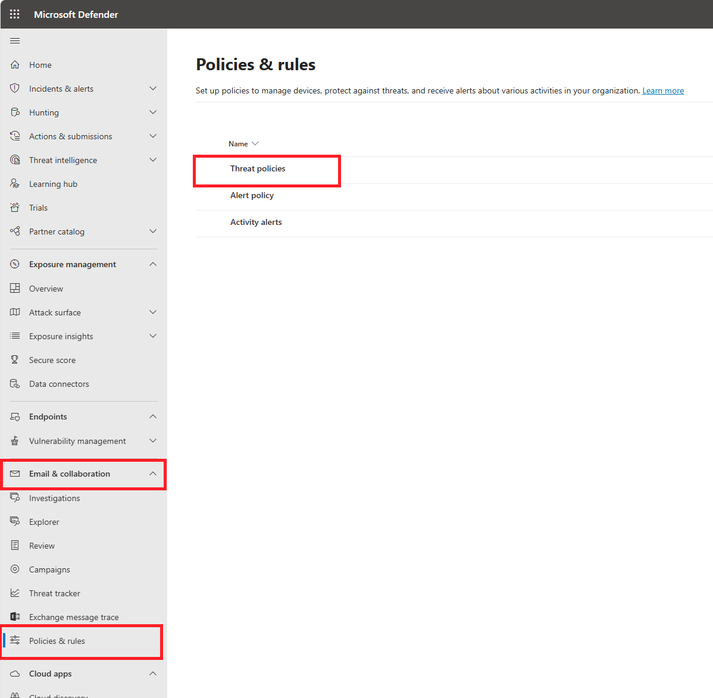

Enroll in Microsoft 365 Business Standard for a complimentary 30-day trial.

Add Microsoft Business standard license to a user

Navigate to the Microsoft Admin Center and choose the 'Setup' option.

Select get your custom domain set up

Click on get started to add your custom domain. If your domain has been added in Azure, it may appear as an incomplete domain.

If your custom domain is not visible, select 'Add Domain' to integrate it

Choose your preferred method for connecting your domain

You should receive a page displaying the MX Record, TXT Record, and CNAME Record. Copy the three records and add them to your domain name registrar

Navigate to your domain registrar and create the three records you copied from Microsoft 365. Please note that the TXT record includes the SPF record. You may need to wait a few minutes (typically around 5 minutes) for the records to sync from your domain name registrar to Microsoft 365. Go back to Microsoft 365 and click on next and done to complete setup.

Refresh the page, and you should see the domain status change to 'Healthy'.

Open your browser and navigate to www.mxtoolbox.com.Change the search type to 'SPF Lookup.' Enter your domain in the search bar, and your SPF record will be highlighted in green. The Sender Policy Framework(SPF) record informs email servers about the authorized mail servers for your domain. When you send an email, the recipient's email server performs an SPF check to verify the origin of the email
Proceed to set up DKIM. DKIM (DomainKeys Identified Mail) works with public and private key encryption to ensure the authenticity of email messages. It verifies that the content of the email has not been tampered with during transit. To set up DKIM, navigate to the Microsoft Admin Center and select 'Security' from the left panel.

First, navigate to 'Email & Collaboration,' then select 'Policies & Rules,' followed by 'Threat Policies.

Navigate to 'Emaail authentication settings

Select 'DKIM' from the top tab and choose your custom domain. Click 'Create DKIM Keys.' A pop-up will appear with two host names. Copy the CNAME records and add them to your domain name registrar.

Allow a few minutes to pass before enabling the 'Sign messages for this domain with DKIM signatures' option. It is recommended to wait at least 5 minutes before enabling it to avoid encountering any errors. Enable signing after waiting a few minutes.To maintain optimal security, it is recommended to rotate your DKIM keys at least every six months. This can be done by returning to the same configuration location and updating the DKIM keys. In the event of a cyber attack or security breach, immediate rotation of the DKIM keys is imperative to mitigate risks and maintain email integrity.

DMARC is a security protocol that can be applied to your email system. It instructs recipient email servers on how to handle emails that claim to originate from your domain but lack proper DKIM and SPF authentication. DMARC can be configured to either permit or reject emails from an email server lacking a DKIM record. DMARC operates in 'none,' 'quarantine,' and 'reject' modes. Additionally, you can configure DKIM to send security reports to a specified email address, providing insights into DMARC's operational status. Before configuring DMARC, ensure that both SPF and DKIM have been properly set up, as these are prerequisites. To configure DMARC, navigate to your domain registrar and create a TXT record. Allow some time for the changes to propagate, then verify if DMARC has been set up correctly.The recommended approach for DMARC configuration is to start with the 'none' policy, which monitors but doesn't take any action. After gaining confidence and ensuring everything is in order, transition to the 'quarantine' policy. Finally, move to the 'reject' policy to fully enforce DMARC, rejecting any emails that fail the authentication checks

Skills Learned
- Email Security Configuration: Gained hands-on experience in setting up SPF, DKIM, and DMARC to secure an organization's email environment.
- Domain Management:: Learned how to manage custom domains within Microsoft 365 and navigate domain registrars.
- Technical Documentation: Developed the ability to create clear and professional documentation for technical processes and configurations.
- Problem-Solving:: Enhanced your problem-solving skills by troubleshooting and resolving issues related to domain verification and email authentication.
- Cloud-Based Email Administration:: Improved your knowledge of administering and maintaining a cloud-based email environment.
Acknowledgments
Special thanks to all contributors and the community for their support and guidance. This project was inspired by various resources and projects in the cybersecurity and IT fields.
Back to Home